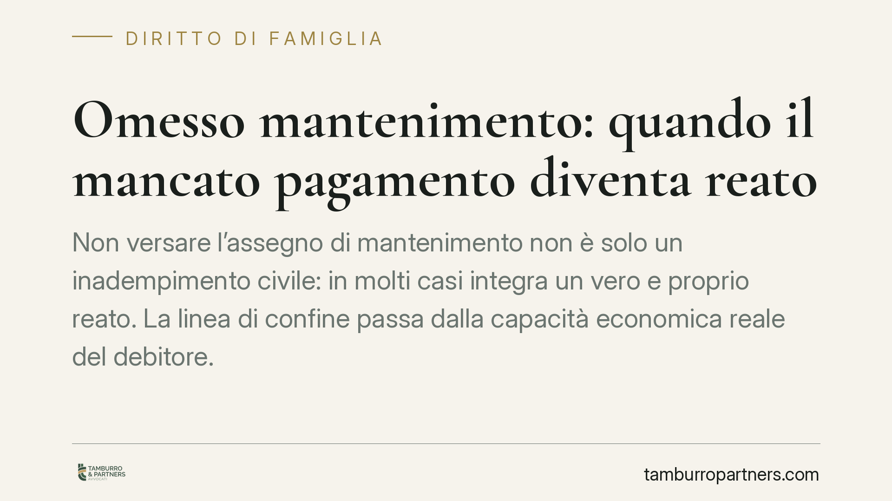

Omesso mantenimento: quando il mancato pagamento diventa reato
Non versare l'assegno di mantenimento non è solo un inadempimento civile: in molti casi integra un vero e proprio reato. La linea di confine passa dalla capacità economica reale del debitore. La Cassazione ha fissato criteri rigorosi per distinguere chi non può pagare da chi sceglie di non farlo, negando la scriminante della povertà quando lo stato di bisogno è colpevole.

Il fatto giuridico
Molti pensano che saltare il pagamento del mantenimento comporti al massimo un pignoramento o una causa civile. Non è così. L'ordinamento tutela penalmente l'obbligo di assistenza verso familiari e figli, e in presenza di determinate condizioni il mancato versamento diventa un reato perseguibile.
La questione centrale, ribadita dalla Corte di Cassazione, è una: distinguere chi si trova in un'oggettiva impossibilità di pagare da chi, pur potendo, sceglie di sottrarsi all'obbligo per danneggiare l'ex coniuge o i figli.
Inquadramento normativo
La norma di riferimento è l'art. 570 del codice penale, che punisce la violazione degli obblighi di assistenza familiare. Il reato si configura, tra l'altro, quando si fanno mancare i mezzi di sussistenza ai discendenti minori, agli inabili al lavoro, agli ascendenti o al coniuge.
Qui va chiarito un concetto tecnico: i «mezzi di sussistenza» non coincidono con l'intero assegno stabilito dal giudice civile. Sono quanto serve a garantire la sopravvivenza dignitosa del beneficiario — vitto, alloggio, cure mediche, vestiario. Il mancato pagamento parziale, quindi, non integra automaticamente il reato: occorre che venga compromesso questo nucleo essenziale.
La giurisprudenza ha però ampliato la tutela. Con la Cassazione penale n. 37419/2001 e la Cass. pen. n. 27245/2002 i giudici hanno affrontato il tema della cosiddetta «scriminante della povertà»: l'impossibilità economica può escludere la responsabilità penale, ma solo se è reale, incolpevole e non transitoria.
Il punto chiave: la povertà colpevole
La Corte è netta. Non basta dichiararsi disoccupati o senza redditi. Chi invoca l'impossibilità di pagare deve dimostrare che quello stato di bisogno non dipende da una propria scelta.
È diverso il caso di chi perde il lavoro per crisi aziendale rispetto a chi rifiuta occasioni di impiego, dilapida il patrimonio o si spoglia volontariamente dei propri beni per apparire nullatenente. Nel primo caso l'impossibilità può escludere il reato; nel secondo lo stato di bisogno è «colpevole» e non giustifica l'inadempimento.
Il magistrato penale valuta caso per caso: capacità lavorativa residua, patrimonio disponibile, tenore di vita effettivo, eventuali trasferimenti sospetti di beni. La semplice difficoltà economica non è una franchigia automatica.
Implicazioni pratiche
Per il genitore o coniuge obbligato, il messaggio è chiaro: l'inadempimento non è mai una zona franca. Anche una condizione economica difficile va documentata e, quando possibile, portata davanti al giudice civile per modificare l'assegno, non gestita con il silenzio.
Per il beneficiario — spesso l'ex coniuge affidatario di figli minori — esiste una tutela penale che si aggiunge agli strumenti civili di recupero del credito. La querela o la denuncia possono attivare un procedimento distinto e parallelo rispetto all'esecuzione forzata.
Attenzione però: il procedimento penale ha tempi, oneri probatori e finalità diverse da quello civile. Non sempre è la via più rapida per ottenere le somme dovute. Va valutato con attenzione l'obiettivo concreto che si vuole raggiungere.
Cosa fare in concreto
- Se sei l'obbligato in difficoltà economica: non interrompere i pagamenti in silenzio. Presenta subito ricorso per la modifica dell'assegno, allegando prove documentali della sopravvenuta impossibilità (licenziamento, malattia, riduzione del reddito).
- Conserva ogni traccia dei versamenti effettuati, anche parziali: bonifici, ricevute, comunicazioni. La prova del pagamento è a carico di chi lo sostiene.
- Se sei il beneficiario non pagato: raccogli la documentazione dell'inadempimento e degli eventuali segnali di occultamento patrimoniale del debitore prima di procedere.
- Valuta la strategia con un professionista: distingui tra l'obiettivo di recuperare le somme (via civile/esecutiva) e quello di reagire a una condotta dolosa (via penale).
- Non spogliarti dei tuoi beni per apparire nullatenente: la Cassazione considera questa condotta prova di povertà colpevole, con effetti opposti a quelli sperati.
Disclaimer
Contributo informativo a cura di Tamburro & Partners - Avv. Giuseppe Tamburro. Non costituisce parere legale.
Ogni famiglia ha il suo equilibrio.
Separazione, divorzio, affidamento, assegno: se vuoi un confronto riservato su una specifica situazione, scrivi allo studio. Ti rispondiamo entro un giorno lavorativo.